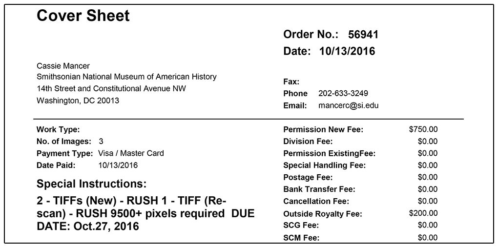
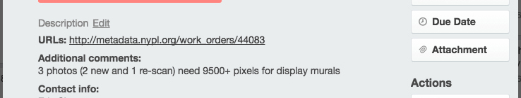
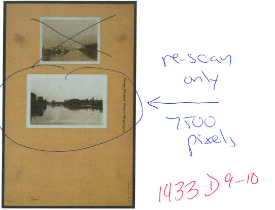
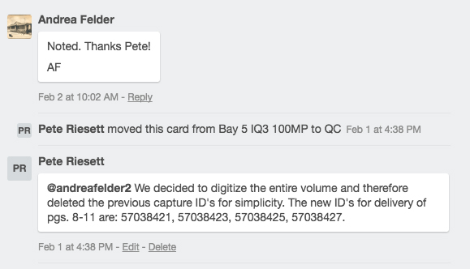
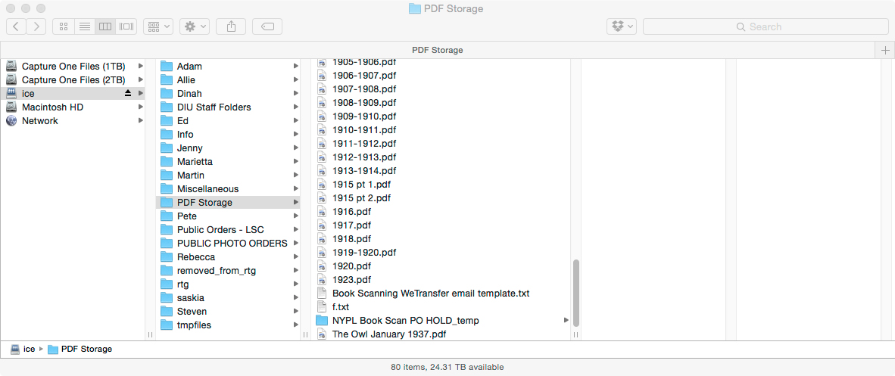
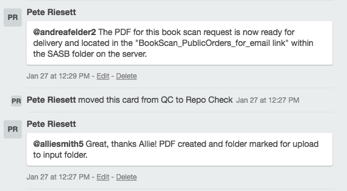

Quickstart Guide to Public Orders
Version updated: 2/14/2017
Summary : This document provides a step-by-step guide to what to look for when approaching a Public Order digitization request. We hope to ensure that we meet both the needs of the patron, while also covering our internal image quality specifications for access and long term preservation.
Cover Sheets:
● Due date (Normal, Rush or Super Rush turnaround time)
○ Please allow enough time for shooting/processing, QC and ingest through RTG to allow the Permissions staff (Andrea Felder or Tom Lisanti) to deliver on time
● Check to make sure the correct material is with correct cover sheet
○ Is every book or item accounted for?
● Keep the Permissions Cover Sheet with the material through the various steps of the process
○ Once packed up for return, paperwork can be added to the stack of PO’s next to the iMac workstation)
Work Orders:
● Add yourself as photographer as soon as Work Order is opened for the first time
○ Makes for easier tracking
PPI - Pixel Resolution (‘Detail Views’, Etc.):
● Are there specific pixel resolution needs by the patron?
○ Usually these requests are noted within the “Special Instructions:” on the front of the cover sheet and/or within the “Additional comments:” on the Trello card


○ If not, it’s helpful to always do a thorough check of the paperwork that accompanies the material --- or that’s attached as a PDF to the Trello card
○ Sometimes only a single page Cover Sheet from Permissions is available
○ Other times, there may be additional pages attached that include the online request - “NYPL Licensing Application Form” with notes by either Tom or Andrea from Permissions (referenced in detail below and in PDF in archived card here)

○ If doing LHG - NYC Views (best to reshoot the overall mounted page, recto/verso) to replace previous versions, in addition to the “Detail view” - as referenced on the work order screenshot below.

● General rule of thumb, fill the frame as much as possible
○ Rotate digital back vertically if needed - for lighting, maximum sensor coverage and/or option to use smaller target
○ Filling the frame will hopefully mean less reshoot requests in the future by patrons and will also mean we can confidently say that we provided the highest resolution we could, given our current equipment
○ At times, it may be make sense for items with a large area of paper border on a print (i.e. a 4x6” photographic image or etching - printed on an 11x14” paper), to shoot the entire print (recto/verso for preservation) and then create a “detail view” for the item to fulfill the patrons pixel dimension request for the tighter shot to the image area edge
● If reshooting a photographic print for example, at a higher ppi and no verso was previously digitized, let’s shoot the verso as well
● Digitize the entire item whenever we have the bandwidth and time to do so (and there are not rights restrictions are in place)
○ For example, where pg. 2 and 3 of a manuscript is requested and there are only 4 pages total, we should try to shoot all pages for future DC reference and preservation of the given material. Especially beneficial for public domain items. (i.e.PO57294)
● Double-page spreads from ‘Book Scans’ on a copy stand (not done on BC100)
○ As one shot (there may be occasional exceptions, but we’d like to try to capture spreads when possible)
Metadata & Trello Updates:
● Material being requested as a ‘Book Scan’ and their captures
○ Ideally Book Scan requests should only have the item added to the Work Order, with no associated captures created by Permissions or metadata staff
○ DIU photographers will then create the needed captures after the item has been digitized, based on the final capture count and then populate ID’s so they are sequential
● Metadata issue or an item needs correction, items added, etc.
○ Aya (Aygul Malkeyeva) from MSU can assist in needed adjustments to collection items, or adding necessary items (if for example, we decide to shoot an entire book and/or need to have items added to better match ingest from TMS database, etc)
● Changes in ID’s for any given material - from what may be noted on the Cover Sheet
○ For example, if we have a request for 4 pages from a bound item (that has already had the ID’s created on the Work Order by Permissions), but we then decide that we have the time to digitize the entire item - with the ‘book scan’ approach. In this care, it’s easier from a metadata standpoint (and with Capture One renaming), to delete those capture ID’s and have them remade so that the ID range is sequential.
■ When this is done, let’s be sure we make a comment on the Trello card that alerts the Permissions staff that they will need to update their database accordingly - so that the correct images are delivered.

Book Scan QC & PDF Creation:
● PDF creation now added to the QC process
● PDFmaker script should be available on all workstations
● PDF naming convention for single versus multiple books/volumes:
○ A single book/volume:
■ “NYPL Book Scan PO 57133.pdf”
○ For multiple books/volumes, let’s create a PDF per book/volume:
■ If there’s volume info, let’s default to using those:
● i.e. “NYPL Book Scan PO 57133 vol 2.pdf” & NYPL Book Scan PO 57133 vol 3-4”.pdf
■ If there is no volume info, let’s use:
● i.e. “NYPL Book Scan PO 57133 1of2.pdf” & “NYPL Book Scan PO 57133 2of2”.pdf
● If there are no corrections needed, simply open a Terminal window and type ‘pdfmaker’
○ Drag your server PO folder into the Terminal window and press [Return]
○ Jpegs will be generated, formed into a PDF, and automatically moved into the PDF Storage directory on the server

○ Add a similar comment to alert Andrea Felder that PDF is ready for delivery…

■ Once PDF is delivered by Permissions, Andrea updates the folder with “- done AF” and moves it to the “NYPL Book Scan PO HOLD_temp” folder (if needed for redelivery or future access).
● After PDF is created and folder added to server location, the folder of U & S files can be marked as usual with X’s for upload of to RTG
OTHER ASPECTS TO KEEP IN MIND:
● Large quantity orders, where there are several hundred/thousands of images being requested as TIFF’s
○ It is usually the case that this is worked out beforehand with Permissions, but these are often best delivered on an external hard drive, which is supplied by the patron (i.e. Google Cultural Institute request of 1300+ West Side Story negs & prints - U & S files delivered = 770GB)
○ Just keep in mind that we’ll want to make sure these files are transferred to necessary hard drive after QC and before session deletion from local HD
When in doubt, ask Eric, Pete or Steven for clarification. There are times when we may need to reach out to Permissions (Tom or Andrea) for feedback and, if needed, have them follow-up with the patron for clarification.